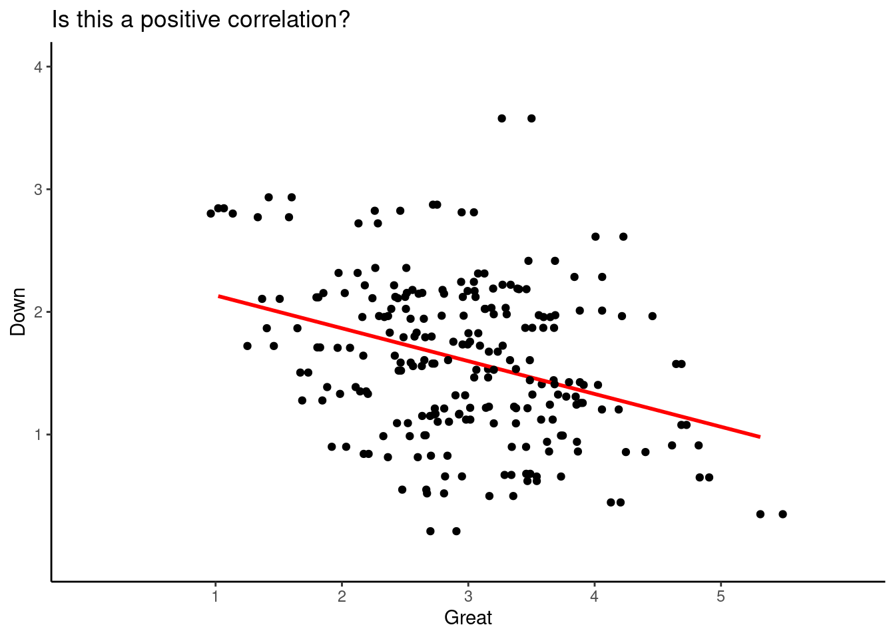

Correlation and Regression Models
Part 1
Today’s aims
To introduce correlation to estimate relationships between two variables.
To introduce the notion of covariance.
To study scatter plots to visualize correlations.
What is a correlation coefficient ?
A correlation coefficient is a numerical index that reflects the relationship between two variables. The value of this descriptive statistic ranges between -1.00 and +1.00.
A correlation between two variables is sometimes referred to as a bivariate (for two variables) correlation
What is a correlation coefficient ?
- At the beginning we will study the correlation named Pearson product-moment.
- There other types of correlation estimation depending on the data generating process of each variable.
- Pearson product-moment deals with continuous DATA.
Correlation interpretation and other features
Salkind & Shaw (2020):
Correlation interpretation and other features (cont.)
Salkind & Shaw (2020):
A correlation can range in value from \(-1.00\) to \(+1.00\).
A correlation equal to 0 means there is no relationship between the two variables.
The absolute value of the coefficient reflects the strength of the correlation. So, a correlation of \(-.70\) is stronger than a correlation of \(+.50\). One frequently made mistake regarding correlation coefficients occurs when students assume that a direct or positive correlation is always stronger (i.e., “better”) than an indirect or negative correlation because of the sign and nothing else.
A negative correlation is not a “bad” correlation.
We will use the letter r to represent correlation. For example \(r= .06\).
Correlation interpretation and other features (cont.)
\(r_{xy}\) is the correlation coefficient.
\(n\) is the sample size.
\(X\) represents variable \(X\).
\(Y\) represents variable \(Y\).
\(\Sigma\) means summation or addition.
Let’s take a look at positive correlations
Let’s take a look at negative correlations (cont.)
Warning in rmvnorm(200, mean = c(30, 63, 95), sigma = cor2cov(coR, SDS)): sigma
is numerically not positive semidefiniteCorrelation matrix
Salkind & Shaw (2020):
- You will find a correlation matrix in publications.
- It is the best way to represent several correlations between different pairs of variables.
- You will notice that a a correlation matrix has 1.00 on the diagonal and two “triangles” with the same information.
Coefficient of Determination
- There is a useful trick, you could square your \(r\) and get a measure of correlation in terms of percentage of shared variance:
Coefficient of Determination (cont.)
What is the coefficient of determination in this case?
We just need to estimate \(r^2= -0.22^2 = -0.05\). Attention and depression shared only 5% of the variability (variance).
Warning: Removed 7 rows containing non-finite values (`stat_smooth()`).Warning: Removed 7 rows containing missing values (`geom_point()`).Scatter plots and direction of correlation
I have shown you several plots, these plots are called scatter plots.
These plots are useful to explore visually possible correlations.
When you create this plots, you only need to represent one of the variables in the x-axis and the other variable will be represented in the y-axis.
Note
- Can you guess if the next scatter plot corresponds to a positive correlation?
Scatter plots and direction of correlation (cont.)
ggplot(data = rum_scores, aes(x = rumZ, y = worryZ)) +
geom_point() +
scale_y_continuous(breaks = c(-3, -2, -1, 0, 1, 2, 3),limits = c(-3,3)) +
scale_x_continuous(breaks = c(-3, -2, -1, 0, 1, 2, 3),limits = c(-3,3)) +
#geom_jitter(width = 0.25) +
##geom_smooth(method = lm) +
xlab("Standardized Rumination Score")+
ylab("Standardized Worry Score")+
ggtitle("Is this a positive correlation?") +
theme_classic()Warning: Removed 23 rows containing missing values (`geom_point()`).Scatter plots and direction of correlation (cont.)
- We can check some values and see what is happening, like case #78, in the next plot:
ggplot(data = rum_scores, aes(x = rumZ, y = worryZ)) +
geom_point() +
scale_y_continuous(breaks = c(-3, -2, -1, 0, 1, 2, 3),limits = c(-3,3)) +
scale_x_continuous(breaks = c(-3, -2, -1, 0, 1, 2, 3),limits = c(-3,3)) +
#geom_jitter(width = 0.25) +
##geom_smooth(method = lm) +
xlab("Standardized Rumination Score")+
ylab("Standardized Worry Score")+
ggtitle("Is this a positive correlation?") +
gghighlight(worryZ > 2.5, use_direct_label = FALSE)+
geom_label(aes(label = ID),
hjust = 1, vjust = 1, fill = "purple", colour = "white", alpha= 0.5)+
theme_classic()Warning: Using one column matrices in `filter()` was deprecated in dplyr 1.1.0.
ℹ Please use one dimensional logical vectors instead.
ℹ The deprecated feature was likely used in the gghighlight package.
Please report the issue at
<https://github.com/yutannihilation/gghighlight/issues>.Warning: Removed 23 rows containing missing values (`geom_point()`).Warning: Removed 2 rows containing missing values (`geom_point()`).Warning: Removed 2 rows containing missing values (`geom_label()`).Scatter plots and direction of correlation (cont.)
- Maybe if we add the line of best fit we will see it better:
ggplot(data = rum_scores, aes(x = rumZ, y = worryZ)) +
geom_point() +
geom_smooth(method = lm, color = "red", se = FALSE)+
scale_y_continuous(breaks = c(-3, -2, -1, 0, 1, 2, 3),limits = c(-3,3)) +
scale_x_continuous(breaks = c(-3, -2, -1, 0, 1, 2, 3),limits = c(-3,3)) +
#geom_jitter(width = 0.25) +
##geom_smooth(method = lm) +
xlab("Standardized Rumination Score")+
ylab("Standardized Worry Score")+
ggtitle("Is this a positive correlation?") +
theme_classic()Warning: Removed 23 rows containing non-finite values (`stat_smooth()`).Warning: Removed 23 rows containing missing values (`geom_point()`).Scatter plots and direction of correlation (cont.)
Can you spot the direction of this correlation?
This data come from a questionnaire that asks to rate how emotional you feel. For instance, it asks: Rate how GREAT you feel where 1 = “not feeling” to 6=“I strongly feel it”.
pos <- read.csv("pos_neg.csv")
ggplot(data = pos, aes(x = great , y = down)) +
geom_point() +
#geom_smooth(method = lm, color = "red", se = FALSE)+
geom_jitter(width = 0.25) +
scale_y_continuous(breaks = c(1,2,3,4),limits = c(0,4)) +
scale_x_continuous(breaks = c(1,2,3,4,5),limits = c(0,6)) +
xlab("Great")+
ylab("Down")+
ggtitle("Is this a positive correlation?") +
theme_classic()Warning: Removed 1 rows containing missing values (`geom_point()`).
Removed 1 rows containing missing values (`geom_point()`).Scatter plots and direction of correlation (cont.)
- Let’s add again the line of best linear fit:
ggplot(data = pos, aes(x = great , y = down)) +
geom_point() +
geom_smooth(method = lm, color = "red", se = FALSE)+
geom_jitter(width = 0.25) +
scale_y_continuous(breaks = c(1,2,3,4),limits = c(0,4)) +
scale_x_continuous(breaks = c(1,2,3,4,5),limits = c(0,6)) +
xlab("Great")+
ylab("Down")+
ggtitle("Is this a positive correlation?") +
theme_classic()Warning: Removed 1 rows containing non-finite values (`stat_smooth()`).Warning: Removed 1 rows containing missing values (`geom_point()`).
Removed 1 rows containing missing values (`geom_point()`).
Scatter plots and direction of correlation (cont.)
ggplot(data = rum_scores, aes(x = ageMonths , y = rumZ)) +
geom_point() +
#geom_smooth(method = lm, color = "red", se = FALSE)+
#geom_jitter(width = 0.25) +
#scale_y_continuous(breaks = c(1,2,3,4),limits = c(0,4)) +
#scale_x_continuous(breaks = c(1,2,3,4,5),limits = c(0,6)) +
xlab("Age in Months")+
ylab("Rumination")+
ggtitle("Is this a positive correlation?") +
theme_classic()Warning: Removed 7 rows containing missing values (`geom_point()`).Scatter plots and direction of correlation (cont.)
- Let’s add the line of linear fit:
ggplot(data = rum_scores, aes(x = ageMonths , y = rumZ)) +
geom_point() +
geom_smooth(method = lm, color = "red", se = FALSE)+
#geom_jitter(width = 0.25) +
#scale_y_continuous(breaks = c(1,2,3,4),limits = c(0,4)) +
#scale_x_continuous(breaks = c(1,2,3,4,5),limits = c(0,6)) +
xlab("Age in Months")+
ylab("Rumination")+
ggtitle("Is this a positive correlation?") +
theme_classic()Warning: Removed 7 rows containing non-finite values (`stat_smooth()`).Warning: Removed 7 rows containing missing values (`geom_point()`).Important remarks
- When the correlation is high, it means there is a large portion of shared variance between \(x\) and \(y\).
- When the correlation is high all the values will converge towards the line of best linear fit.
- When the correlation is low, the values will be sparse and far from the line of best fit.
- A flat linear line means that there is not correlation between \(x\) or \(y\) or the correlation is remarkably low. This means \(r=0\) or closer to zero.
Computer estimation time!
- In
Ryou can estimate Pearson correlations using the functioncor()as showed here:
### pos is the name of the object representing my data set
cor(pos$down, pos$great)[1] -0.359944In this estimation, I’m calculating the correlation between the emotion DOWN and the emotion GREAT. The Pearson correlation was \(r= -0.36\). Is this a strong correlation?
- We could follow an ugly rule of thumb, but be careful, these are not rules cast in stone (Salkind & Shaw, 2020):
JAMOVI
JAMOVI
References
Salkind, N. J., & Shaw, L. A. (2020). Statistics for people who (think they) hate statistics: Using r. Sage publications.